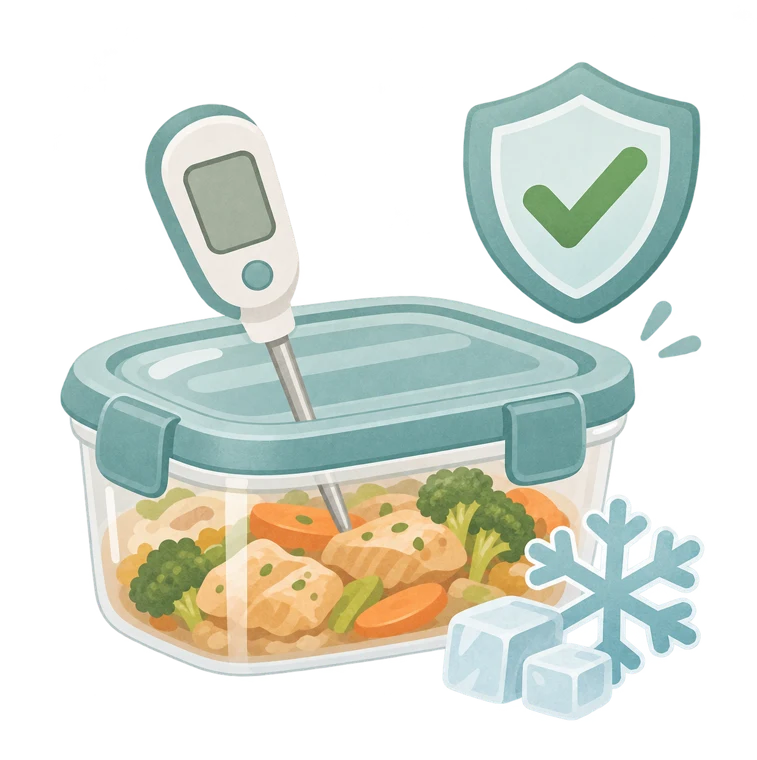
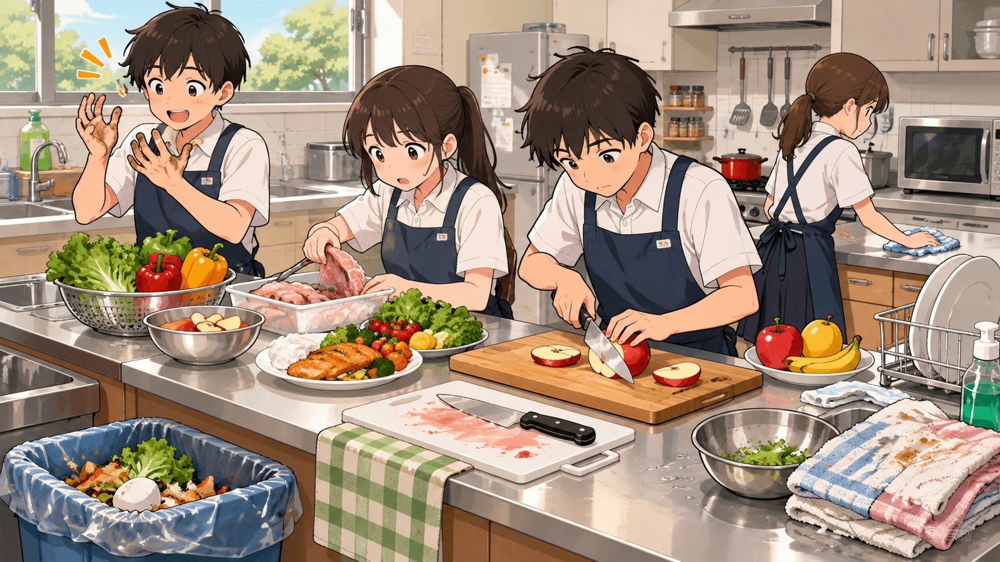

🛡️ 食安防護力｜第 4 關
這個，
這個，
還能吃嗎？
看起來沒壞，就一定安全嗎？
今天你要進入「食安調查局」，找出生活裡看不見的風險。
教師提問：「你判斷食物能不能吃時，通常先看什麼？」

CASE 01｜昨晚的雞排
🌙 放在桌上的雞排
昨天晚上 10:00 買的雞排吃一半後忘了冰，今天早上 7:00 才發現。聞起來沒有臭味。
🍗🕙➡️🌅
教學重點：「外觀、氣味正常」不代表一定安全；不要把嗅覺當作唯一判斷工具。
CASE 02｜剩下的咖哩
🌡️ 剩食不是「放著就好」
晚餐剩下一鍋咖哩，家人想留到明天。請把處理順序排好。
依序點 ① → ② → ③，建立「快速降溫 × 儘速冷藏 × 再加熱」概念。
🌡️ 為什麼不能放在室溫？認識「溫度危險帶」
🔥 60°C 以上｜熱藏熱騰騰的食物，細菌不容易繁殖。
⚠️ 7°C～60°C｜溫度危險帶細菌最容易大量繁殖的溫度，室溫就在這裡！熟食放在室溫，最好不要超過 2 小時。
🧊 7°C 以下｜冷藏（冷凍是 −18°C 以下）細菌繁殖變慢，但不會死掉，所以冷藏也不能放太久。
小測驗：冰箱的冷藏室，溫度應該維持在幾度以下？
教師提醒：溫度依「食品良好衛生規範準則」：冷藏 7°C 以下、冷凍 −18°C 以下、熱藏 60°C 以上。可提醒冰箱不要塞太滿，冷空氣才流得動。
CASE 03｜冰箱收納大挑戰
🧊 冰箱不是「塞進去就安全」
先點一個食物，再點你想放的層架。重點是：生食和即食／熟食要降低彼此污染的機會。
上層｜即食／熟食區
中層｜乳品／蛋類
下層｜生肉／生魚
蔬果區
待收納食物
先選一項食物。
教師提問：「為什麼生肉不適合放在熟食上方？」
CASE 04｜廚房裡發生了什麼事？
🔍 找出食安風險
直接點擊圖片，找出 6 個可能造成食品安全問題的地方。

已找到 0 / 6
找到一個風險後，這裡會告訴你原因。
教師提醒：這一關不只是「找碴」，而是要讓學生說出「為什麼有風險」。
CASE 05｜大家為什麼不舒服？
🤢 班級慶生後，有同學腸胃不適
如果你是食安調查員，會先調查哪些線索？請至少選 4 個。
先從「食物、保存、時間、人、症狀」這些線索開始，比直接猜某一種細菌更重要。
教學重點：讓學生建立調查邏輯，而不是把食品中毒單元變成病原菌名稱背誦。
🛡️
FINAL CASE｜最後一個案件
完成最後判斷，建立你的食安防線
食品安全不是「看起來有沒有壞」，而是從購買、保存、處理到烹調，每一步都在降低風險。
🛡️ 食品中毒預防「五要」原則
🧼
要洗手
處理食物前、上廁所後
要洗手
處理食物前、上廁所後
🥬
要新鮮
食材新鮮、看有效日期
要新鮮
食材新鮮、看有效日期
↔️
要生熟食分開
刀、砧板、存放都分開
要生熟食分開
刀、砧板、存放都分開
🔥
要徹底加熱
煮熟煮透、剩菜熱透
要徹底加熱
煮熟煮透、剩菜熱透
🧊
要低溫保存
冷藏 7°C 以下
要低溫保存
冷藏 7°C 以下
最終案件｜這份便當安全嗎？
07:00
便當做好。
07:30
帶到學校。
08:00–12:00
便當放在教室，沒有提供是否保冷／保溫的資訊。
12:10
準備吃午餐。
💡 這一題刻意保留「還需要更多資訊」：資訊不足時，不要硬猜。
收尾提問：「你現在判斷食物安不安全，會多看哪幾個線索？」